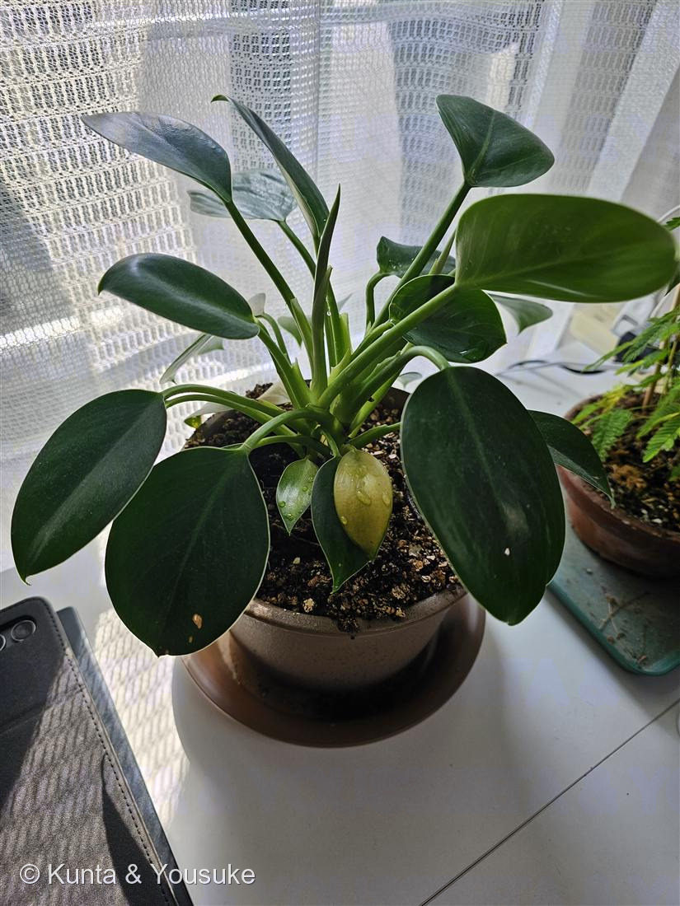

地図を読み込んでいるよ…
🔍 写真も地図も、押しているあいだ拡大して見られるよ（スマホは指を置いてすこし待ってね）。
🌍 の地図＝この子がもともと自生している場所を緑に。熱帯アメリカ（属として）。
⚠これは属（フィロデンドロン属）のふるさと。この子は種が分からないから、なかま全体の故郷を塗ったよ。
⚠ 地図は国（日本と中国だけ県・省）までしか塗れないから、ほんとうの分布より広く見えていることがあるよ。地図はだいたいの場所。正確なところは、上の文を見てね。
フィロデンドロン
Philodendron sp.（種は同定中）
別名 · ラベルは「フィロデンドロン」のみ
サトイモ科 · Araceae（フィロデンドロン属）
おうちの植物世話：陽介 · コケ(019)の元鉢の主植え替えで、この化粧鉢へ引っ越し
名前と学名の由来
- Philodendron（フィロデンドロン）＝ギリシャ語 phileo（愛する）＋ dendron（樹木）＝「木を愛するもの」。仲間の多くが、木に登り寄りそって育つ着生植物だから。
- 種小名はまだ未確定（ラベルは「フィロデンドロン」のみ）＝Philodendron sp.。本当の名前は、葉に切れ込みが出てきたり、いつか花が咲いたりしたら分かるかも。長い付き合いの、お楽しみ。
この植物のこと
- サトイモ科フィロデンドロン属の観葉植物。熱帯アメリカ原産で、丈夫で耐陰性があり、観葉の定番。
- 新しい葉は、筒状の鞘（さや）から巻いて出てくる——サトイモ科のしるし。写真の中心の黄緑がその新葉。
- いまは葉が全縁（切れ込みなし）でつやつやだけど、種によっては大きくなると葉が羽状に深く切れ込む。この子もこれから姿が変わるかも。
- 花は仏炎苞（ぶつえんほう）（ミズバショウやアンスリウムと同じ包み型の花）。ただし室内ではめったに咲かないので、種を見分ける決め手が得にくい。
- ⚠シュウ酸カルシウムを含み、樹液や葉に毒性がある（ペットや小さな子の誤食に注意）。
- No.019 コケの“元鉢の主”。植え替えでこの化粧鉢へ引っ越し、コケは元の鉢に残ってもらった。
参考：観葉植物・フィロデンドロンの一般的な栽培管理をもとに整理。